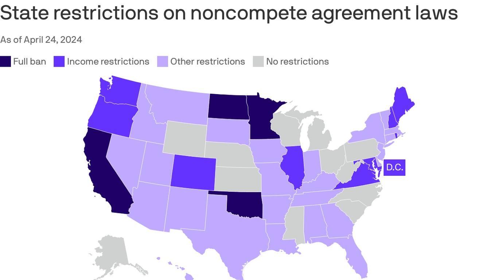

States where noncompete agreements are banned or restrictedA nationwide ban on noncompete agreements, which prohibit employees from taking jobs with their employer's competitors, looks set for a bruising court battle. Why it matters: Even if the national rule is rejected, employers still face restrictions on noncompetes at the state level. Plenty of states already limit the use of noncompete agreements — Minnesota became the fourth state to pass a ban last year. And more are considering passing restrictions — many aimed at the health care sector, where these contracts are particularly popular, as Axios' Tina Reed reports. Between the lines: The lawsuit centers on the FTC's ability to establish a nationwide ban. It doesn't challenge states' regulating noncompetes. |
 |